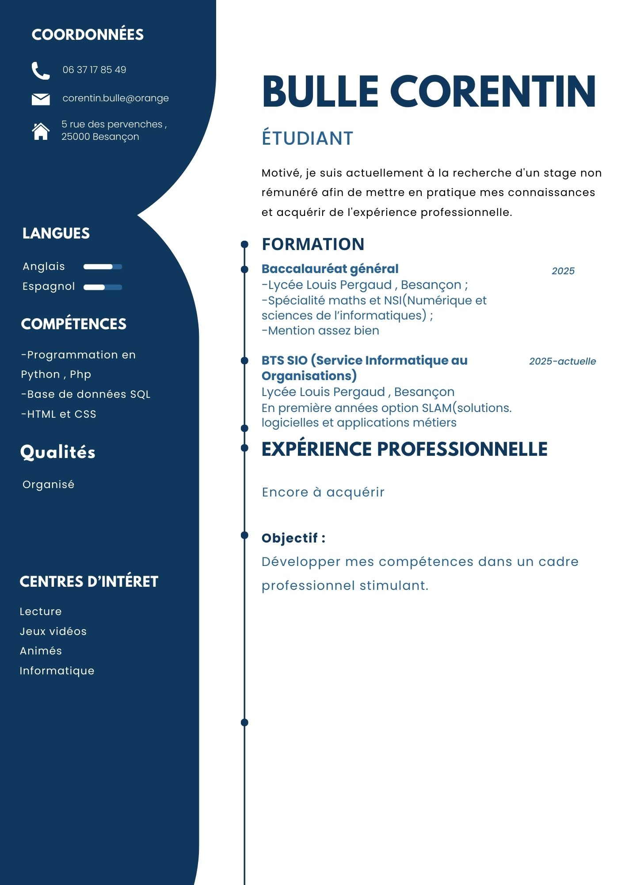

Mon CV
Formation, compétences et centres d’intérêt.
Informations personnelles
Corentin Bulle
Numéro de téléphone : 06 37 17 85 49
5 rue des Pervenches 25000 Besançon — France
Formation
- -Baccalauréat général , Lycée Louis Pergaud
- -Mention assez bien
- -Spécialité Mathématiques et NSI(Numériques et Sciences Informatiques)
Compétences
- -Développement Web : PHP 8, HTML5, CSS3, Symfony 6, Twig, Doctrine, React, React Native, Bootstrap JS
- -Accès à une base de données en PHP Base de données , modèle relationnel
- Langages : SQL, PL/SQL
- Serveurs : MySQL/MariaDb, SQLServer
- Cybersécurité appliquée aux développements web
- Maîtrise des outils bureautiques
Qualités
- Organisé
- Curieux
- Sérieux
Centres d'intérêt
- Lecture
- Jeux vidéo
- Animés
- Informatique
Cliquez sur l'image pour avoir un meilleur aperçu
